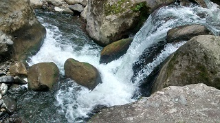
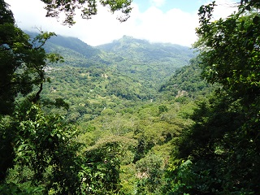
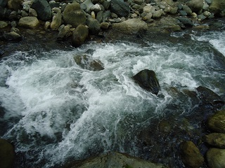
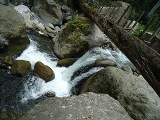
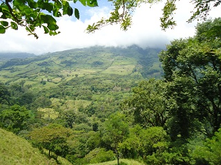

Este rio se encuentra en la parte baja del cerro de la colonia Jacona(de ahi el nombre), que se caracteriza por estar en el paso de la colonia a la cabecera municipal.
Esta rodeado por vegetación abundante y variada, consta de un solo brazo, y cuenta con pozas de hasta 1.80 mts de profundidad, además de tener corriente y en algunos puntos existen caidas de agua de aproximadamente 1 metro de altura.
Es un lugar muy interesante ya que el recorrido se realiza caminando y se puede apreciar la fauna, flora y sobretodo de bonitos y diversos paisajes.
Se encuentra a las afueras de la cabecera municipal, en el camino de terraceria o brecha que conduce a la colonia Jaconá.
Estando en Tapilula, dirigirse al tramo carretero 195 rayon-ixhuatan, y dirigirse con rumbo al noviciado, seguir el camino de terraceria, este camino es unico, y se llega al lugar caminando, aproximadamente 8 km.
En el lugar usted puede practicar actividades como:





posicione el mouse o de click sobre las imágenes
{kind=link}
{kind=link}
{kind=link}
{kind=link}
{kind=link}